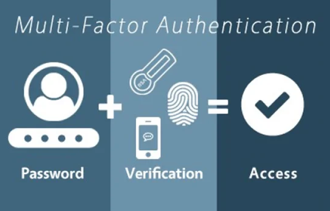

What multi-factor authentication actually does

MFA adds another kind of identity proof so a stolen password alone is less useful. Enable it on important school and personal accounts.
MFA requires more than one kind of proof that you are the person signing in. If a criminal learns your password from a phishing message or a data breach, the additional step can stop that password from being enough. A school account is especially valuable because it can contain email, coursework, contact details, and password-reset messages for other services. CISA's MFA explanation recommends turning it on wherever an account offers it.
Authenticator apps, security keys, device prompts, and text codes are common methods. Reject any prompt you did not start and keep codes private.
Common second steps include a code from an authenticator app, a security key, or a prompt on a registered device. Text-message codes are also MFA, but they depend on control of your phone number. Never approve an MFA prompt you did not initiate, and never tell a caller your one-time code. An unexpected prompt can mean someone already knows your password and is trying to complete the login.
The full MFA triad

The MFA triad is something you know, something you have, and something you are. Multi-factor sign-in combines at least two different categories.
Something you know is information in your memory, such as a password or PIN. Something you have is a possession, such as a security key or a registered phone running an authenticator app. Something you are is a biometric trait, such as a fingerprint or face scan. These are categories of factors, not three steps everyone must complete. A sign-in is multi-factor when it combines at least two different categories. Two passwords are still both “something you know.” The FTC's two-factor guide explains these choices.
A password plus an authenticator code is one example of two factors. Prefer stronger methods when available and store recovery codes privately.
For example, a password followed by an authenticator-app code combines something you know with something you have. A passkey protected by your device's fingerprint or PIN can also combine factors. The choice depends on what the service supports. A security key or passkey is especially strong against fake login pages because it is tied to the real site; an app code is a good choice when that is unavailable. Keep your recovery codes in a private place before you lose access to your phone.
How SIM swapping threatens text codes

A SIM swap moves a phone number to an attacker-controlled SIM or eSIM. This can let the attacker receive texted login codes.
The illustration shows the basic chain: an attacker collects details about a victim, contacts the cellular carrier while pretending to be that person, and persuades the carrier to move the number to a different SIM or eSIM. Once the attacker receives the victim's calls and texts, they may be able to receive SMS login codes. A password plus a text code is still useful protection against many attacks, but a SIM swap can defeat the text-code part. The FTC's SIM swap advice explains this risk.
An unexpected loss of mobile service may signal a SIM swap, although outages also happen. Contact the carrier through its official channel to check.
A sudden loss of calls, texts, and mobile data may be a warning, particularly if the carrier also reports a SIM change you did not request. Loss of service can have ordinary causes too, so contact the carrier using its official number or app and ask what happened. The attacker may already be trying to reset email, banking, or social-media accounts while the phone number is unavailable.
Choose stronger methods and prepare a recovery plan
Add a carrier PIN or transfer lock and choose a security key or authenticator app for important accounts. Unique passwords and sign-in alerts add protection.
Protect the carrier account as well as the online accounts. Ask your carrier about an account PIN or transfer lock, and keep the PIN private. For important services, prefer a security key or authenticator app to text messages when possible. Use a long, unique password for each account, and turn on sign-in alerts so a new login is easier to notice. These steps reduce risk, though no single one guarantees that a carrier or an account cannot be tricked.
If you suspect a SIM swap, recover the number quickly, then secure accounts from a trusted device. Check banking, school, and social accounts for unauthorized activity.
If you suspect a SIM swap, call the carrier immediately to recover your number. Then use a trusted device to change passwords, check recent sign-ins, and review financial and school accounts for unauthorized activity. Tell campus IT if your school account may be involved. Save backup codes ahead of time so you can regain access without relying on the same phone number.
An unexpected sign-in approval is a warning. The sample approval button is disabled for safety.
Example of an unsafe approval request:
Sources and further reading
CISA: More than a Password, FTC: two-factor authentication, and FTC: SIM swap scams.